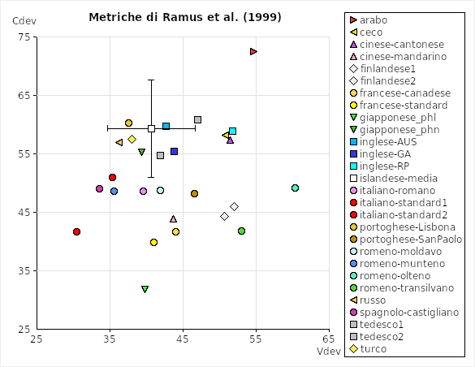
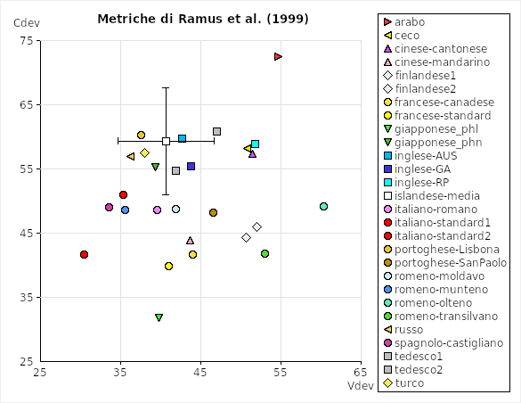

The delta
Ramus, Nespor & Mehler (1999) were the first to propose some acoustic correlates of rhythm; their hypotheses were based on what had been suggested by Dauer (1984) and on some theories concerning infants' perception of speech (see Mehler et alii, 1999). In particular, they computed ΔV (standard deviation of vocalic intervals), ΔC (standard deviation of inter-vocalic intervals, that is to say consonantal intervals) and %V (vocalic percentage) on samples of 8 languages. Results confirmed their expectations that the so-called syllable-timed languages would present lower values of ΔV and ΔC than the so-called stress-timed languages; this seems to prove that the duration of vocalic and consonantal intervals is more variable in stress-timed than in syllable-timed languages. Moreover, in compliance with expectations, syllable-timed languages resulted in higher values of %V presumably because of the lack of complex consonant clusters in these languages.
Members of the staff of the Laboratory of Experimental Phonetics of Turin tried to compute these parameters on a broader sample of languages; the results are shown in the charts. The data consist of the narrative The North Wind and the Sun translated into various languages and read by professional or standard speakers (we have used some of the illustrations of the Handbook of the IPA and of the Journal of the IPA, but many samples have been recorded in our laboratory). The recordings have been accurately segmented and annotated independently by Antonio Romano and Paolo Mairano and the final results consist of the average of the values obtained by the two authors. Every dot in the chart corresponds to one speaker (except for Icelandic, for which we have 1 dot for 10 speakers to avoid confusion - the error bar indicates the standard deviation between the results obtained for each of the 10 speakers). The values of the correlates have been computed with the help of Correlatore, with which we have also built the charts.
A detailed discussion of the results can be found in our publications (see the bibliography below). However, it should be noticed that languages traditionally considered as syllable-timed (Italian, French, Spanish, ...) are roughly situated in the lower right corner of the first chart (with high values of %V and low values of ΔC) and in the lower left corner of the second chart (with low values of both ΔC and ΔV), whereas languages traditionally considered as stress-timed (English, German, ...) are roughly distributed in the upper left corner of the first chart (with low values of %V and high values of ΔC) and in the upper right corner of the second chart (with high values of both ΔC and ΔV).
 

| Essential bibliography | |
|---|---|
| Ramus, F., Mehler, J. & Nespor, M. (1999) Correlates of linguistic rhythm in the speech signal, Cognition, 73/3, 265-292. | |
| Mairano, P. & Romano, A. (2007) Inter-subject agreement in rhythm evaluation for four languages (English, French, German, Italian). Atti del XVI ICPhS (International Congress of Phonetic Sciences), Saarbrücken, Germania, 6-10 agosto 2007, 1149-1152. (PDF) | |
| Mairano, P. & Romano, A. (2007) Lingue isosillabiche e isoaccentuali: misurazioni strumentali su campioni di italiano, francese, inglese e tedesco. Atti del III Convegno Nazionale AISV (Associazione Italiana di Scienze della Voce), ITC-IRST Povo (TN), 29 novembre - 1 dicembre 2006. | |
| Mairano, P. & Romano, A. (2008) Distances rythmiques entre variétés romanes. In: Turculeţ, A. (a cura di) La variation diatopique de l’intonation dans le domaine roumain et roman, Iaşi: Edizioni Universitarie "Alexandru Ioan Cuza", 251-272. | |
| Mairano, P. & Romano, A. (2010) Un confronto tra diverse metriche ritmiche usando Correlatore. Atti del V Convegno Nazionale AISV (Associazione Italiana di Scienze della Voce), Università di Zurigo, 4-6 febbraio 2009. | |
| Romano, A., Mairano, P. & Pollifrone, B. (2010) Variabilità ritmica di varietà dialettali del Piemonte. Atti del V Convegno Nazionale AISV (Associazione Italiana di Scienze della Voce), Università di Zurigo, 4-6 febbraio 2009. | |
| Romano, A. & Mairano, P. (2010) Speech rhythm measuring and modelling: pointing out multi-layer and multi-parameter assessments. Atti del convegno Les Universaux Prosodiques, Université Sorbonne Nouvelle, Parigi, Francia, 15 ottobre 2008, Roma: Aracne Biblioteca di Linguistica. |